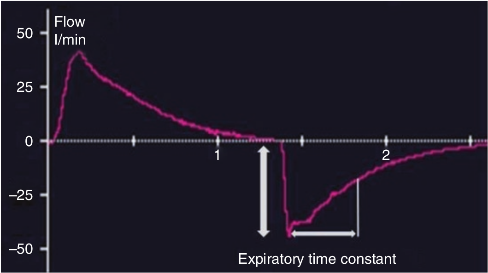

وقتی کمپلیانس کم میشود، فشار ارتجاعی الاستیکی افزایش می یابد. بنابراین در صورت عدم تغییر حجم جاری و مقاومت راه هوائی، شدت جریان حداکثر بازدمی افزایش می یابد. مدت زمان تخلیه ریه کوتاه تر از نرمال است، زیراکه ریه ها سریعتر از عادی تخلیه می شوند. مقدار RCEXP کمتر از ۰/۵ ثانیه است.

وقتی کمپلیانس کاهش می یابد
۱ - حداکثر شدت جریان بازدمی کاهش می یابد
۲ - بازدم طولانی تر میشود
۳ - شدت جریان بازدمی سریعا به مقدار پایه میرسد
۴ - مقدار RCEXP تغییری نمی کند
۵ - بازدم کامل کمتر از یک ثانیه طول می کشد